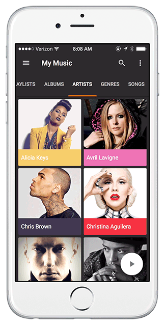

OVERVIEW

This mockup app design that I made is base on a website called Loop. Loop is a kind of new way to discover and listen to music. As a looper, you can share your favorite music with others. Also people can find music at right place, right time by loopers. I used this personal project as a chance to explore some interesting interaction models and visual complexities.


MOTIVATION
Everyone wants to find new cool music. Some of apps just expose daily musical goodies, others make recommendations based on your very own preferences, but they are all based on machine learning and let you feel isolated if you can only consume music.
RESEARCH & ANALYSIS
People want to find more music. But at the same time, they want to share good music with others. I defined some different types of situations after I took a large of time to research users’ behavior. Then keep asking myself when users are listening to music at that moment what can I inspire them to find some interesting things around them and how could users find the types of music genres that get them feeling great and boost their overall happiness by listening to specific mood-boosting music.

DESIGN DETAILS
Wireframes
Draft some quick sketches and creating high-fidelity mockups would be the best way to verify some ideas and fix some potential issues.

Discover and join the room that you’re interested in for finding more music. Follow loopers who you like, to listen what they are listening.

Local Music Library is still there. Back to your own playlists by anytime!

ANIMATIONS AND TRANSITIONS
Material Design
This is a perfect example of morphing the floating action button. This dramatic transformation accentuates the action the button enables.

A floating action button morph into a sheet of material that is part of the app structure.
Transition for switching Play ▶ / Pause Ⅱ status on the main page
"I also shared an article (in Chinese) about how to create this floating action button morphing in Pixate."
Transition “shared elements" persist on screen for the duration of the transition.
(A cover image growing to fill the screen)